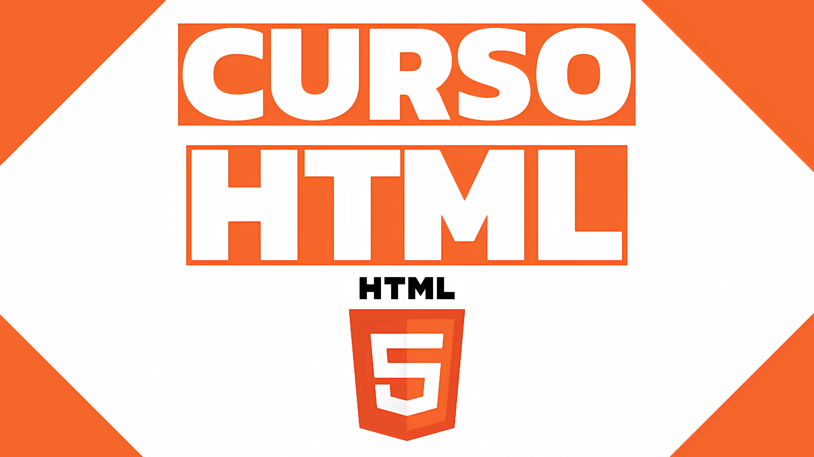

HABILIDADES
HTML

Conocimientos de HTML5. Capacidad para organizar contenido de forma clara y coherente, aplicando buenas prácticas para compatibilidad entre navegadores y optimización para SEO. Experiencia integrando HTML con CSS y frameworks como Bootstrap para crear interfaces modernas y responsivas.
Python

Desarrollo de scripts y automatizacion de tareas mediante programación estructurada en Python. Manejo de estructuras de datos fundamentales (listas, diccionarios, tuplas), comprensión sólida de condicionales, bucles y funciones. Enfoque en la escritura de código limpio, legible y reutilizable.
PostgreSQL

Diseño y administración de bases de datos relacionales utilizando PostgreSQL. Capacidad para crear esquemas eficientes, normalizar tablas, definir claves primarias y foráneas y escribir consultas con JOIN.
MySQL

Gestión de bases de datos MySQL, creación de estructuras e implementación de restricciones y relaciones entre tablas. Familiaridad con herramientas como MySQL Workbench. Enfoque en consistencia, rendimiento y seguridad de los datos.